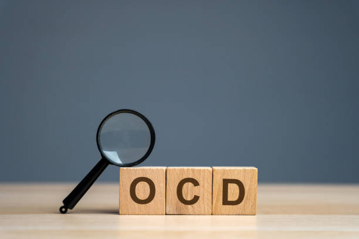

Anxiety Disorders
Anxiety Overview
What is Anxiety?
Anxiety is an emotional response characterized by feelings of worry, fear, or apprehension about future events.
Types of Anxiety Disorders
- Generalized Anxiety Disorder (GAD)
- Panic Disorder
- Social Anxiety Disorder
- Specific Phobias
- Obsessive-Compulsive Disorder (OCD)
Causes
Anxiety can result from a combination of genetic, environmental, and psychological factors, including:
- Genetics
- Brain Chemistry
- Traumatic Experiences
- Chronic Stress
Symptoms
Common symptoms include:
- Excessive worrying
- Irritability
- Difficulty concentrating
- Physical symptoms (e.g., restlessness)
- Sleep disturbances
Coping Strategies and Treatment
Effective strategies include:
- Therapy (e.g., Cognitive-behavioral therapy)
- Medication
- Lifestyle changes (e.g., exercise, mindfulness)
- Support systems
Depression
Depression Overview
What is Depression?
Depression is a common and serious mental health condition that affects how a person feels, thinks, and handles daily activities. It is characterized by persistent sadness and a lack of interest or pleasure in activities once enjoyed.
Types of Depression
- Major Depressive Disorder
- Persistent Depressive Disorder (Dysthymia)
- Bipolar Disorder
- Seasonal Affective Disorder (SAD)
- Postpartum Depression
Causes
Depression can arise from a combination of factors, including:
- Genetics: Family history of depression can increase risk.
- Brain Chemistry: Neurotransmitter imbalances may affect mood regulation.
- Life Events: Trauma, loss, or significant life changes can trigger depression.
- Medical Conditions: Chronic illnesses or hormonal changes can contribute.
Symptoms
Common symptoms of depression include:
- Persistent sadness or low mood
- Loss of interest in activities
- Changes in appetite or weight
- Fatigue or loss of energy
- Difficulties with concentration
- Feelings of worthlessness or guilt
- Thoughts of death or suicide
Treatment
Effective treatment options for depression may include:
- Psychotherapy: Cognitive-behavioral therapy (CBT) is often effective.
- Medication: Antidepressants can help regulate mood.
- Lifestyle Changes: Regular exercise, a healthy diet, and sufficient sleep can improve symptoms.
- Support: Connecting with friends, family, or support groups can provide relief.
Obsessive-Compulsive Disorder (OCD)

Obsessive-Compulsive Disorder (OCD) Overview
What is OCD?
Obsessive-Compulsive Disorder (OCD) is a mental health condition characterized by persistent, unwanted thoughts (obsessions) and repetitive behaviors (compulsions). Individuals with OCD often engage in compulsive actions to alleviate the anxiety caused by their obsessions.
Symptoms
Common symptoms of OCD include:
- Obsessions: Intrusive thoughts or urges that cause significant anxiety. Examples include fears of contamination, harming others, or making a mistake.
- Compulsions: Repetitive behaviors or mental acts performed in response to obsessions, aimed at reducing anxiety or preventing a feared event. Common compulsions include excessive cleaning, checking, or counting.
Causes
The exact cause of OCD is not fully understood, but several factors may contribute:
- Genetics: Family history may increase the likelihood of developing OCD.
- Brain Structure: Abnormalities in brain circuitry involved in anxiety and habit formation may play a role.
- Environmental Factors: Trauma, stressful life events, or infections can trigger or exacerbate symptoms.
Treatment
Effective treatment options for OCD include:
- Cognitive-Behavioral Therapy (CBT): Specifically, Exposure and Response Prevention (ERP) is a common and effective therapeutic approach.
- Medication: Selective serotonin reuptake inhibitors (SSRIs) can help reduce symptoms.
- Support Groups: Connecting with others who understand OCD can provide encouragement and coping strategies.
Bipolar Disorder
Bipolar Disorder Overview
What is Bipolar Disorder?
Bipolar Disorder is a mental health condition characterized by extreme mood swings, including emotional highs (mania or hypomania) and lows (depression). These mood changes can affect energy levels, activity, sleep, judgment, behavior, and the ability to think clearly.
Types of Bipolar Disorder
- Bipolar I Disorder: Defined by manic episodes lasting at least seven days or by manic symptoms that are so severe that immediate hospital care is needed. Depressive episodes also occur, lasting at least two weeks.
- Bipolar II Disorder: A milder form, characterized by a pattern of depressive episodes and hypomanic episodes, but not the full-blown manic episodes typical of Bipolar I.
- Cyclothymic Disorder: Periods of hypomanic symptoms and periods of depressive symptoms lasting for at least two years (one year in children and adolescents). Symptoms do not meet the criteria for a hypomanic episode or a depressive episode.
Causes
The exact cause of Bipolar Disorder is not known, but several factors may contribute:
- Genetics: Family history of bipolar disorder increases the risk.
- Brain Structure and Chemistry: Imbalances in neurotransmitters may play a role.
- Environmental Factors: Stress, trauma, or significant life changes can trigger episodes.
Symptoms
Symptoms vary between manic and depressive episodes:
- Manic Symptoms: Increased energy, reduced need for sleep, unusual talkativeness, racing thoughts, distractibility, and impulsive behaviors.
- Depressive Symptoms: Feelings of sadness or hopelessness, loss of interest in activities, fatigue, difficulty concentrating, and thoughts of death or suicide.
Treatment
Effective treatment options for Bipolar Disorder include:
- Medications: Mood stabilizers, antipsychotic medications, and antidepressants may be prescribed.
- Psychotherapy: Cognitive-behavioral therapy (CBT) and other therapeutic approaches can help manage symptoms.
- Support Groups: Connecting with others can provide valuable support and shared experiences.
Post-Traumatic Stress Disorder (PTSD)

Post-Traumatic Stress Disorder (PTSD) Overview
What is PTSD?
Post-Traumatic Stress Disorder (PTSD) is a mental health condition that can occur after experiencing or witnessing a traumatic event. It is characterized by severe anxiety, flashbacks, nightmares, and uncontrollable thoughts about the event.
Causes
PTSD can develop after various traumatic experiences, including:
- Military combat
- Sexual assault
- Natural disasters
- Serious accidents
- Threats of serious injury or death
Symptoms
Common symptoms of PTSD include:
- Re-experiencing: Flashbacks, nightmares, and intrusive thoughts about the trauma.
- Avoidance: Steering clear of reminders, thoughts, or conversations about the event.
- Negative Changes in Thinking and Mood: Persistent negative emotions, feelings of detachment, and difficulty experiencing positive emotions.
- Increased Arousal: Difficulty sleeping, irritability, anger outbursts, and hypervigilance.
Diagnosis
A mental health professional can diagnose PTSD based on the following criteria:
- Exposure to a traumatic event
- Presence of specific symptoms lasting more than a month
- Symptoms causing significant distress or impairment in daily functioning
Treatment
Effective treatment options for PTSD include:
- Psychotherapy: Cognitive Behavioral Therapy (CBT), particularly Trauma-Focused CBT, is commonly used.
- Medication: Antidepressants and anti-anxiety medications can help alleviate symptoms.
- Support Groups: Engaging with others who have experienced similar traumas can provide comfort and understanding.
Schizophrenia
Schizophrenia Overview
What is Schizophrenia?
Schizophrenia is a severe mental disorder characterized by distortions in thinking, perception, emotions, language, and sense of self. It often leads to significant impairment in social and occupational functioning.
Symptoms
Schizophrenia symptoms can be categorized into three main types:
- Positive Symptoms: These include hallucinations (hearing voices or seeing things that aren't there), delusions (false beliefs), and thought disorders.
- Negative Symptoms: These refer to a decrease in emotional expression, lack of motivation, withdrawal from social life, and difficulty experiencing pleasure.
- Cognitive Symptoms: These involve problems with attention, memory, and the ability to process information and make decisions.
Causes
The exact cause of schizophrenia is not fully understood, but several factors are thought to contribute:
- Genetics: Family history of schizophrenia increases the risk.
- Brain Chemistry: Imbalances in neurotransmitters such as dopamine and glutamate may play a role.
- Environmental Factors: Prenatal exposure to infections, malnutrition, and psychosocial stressors may contribute to the development of the disorder.
Diagnosis
Schizophrenia is diagnosed based on clinical assessment and the presence of specific symptoms over a significant duration. A mental health professional conducts a thorough evaluation, often including a physical examination and psychiatric assessment.
Treatment
Effective treatment options for schizophrenia include:
- Medications: Antipsychotic medications are the primary treatment and can help manage symptoms.
- Psychotherapy: Cognitive Behavioral Therapy (CBT) can be beneficial in addressing specific symptoms and improving coping skills.
- Support Services: Vocational rehabilitation and social skills training can help individuals reintegrate into society and improve quality of life.
Eating Disorders
Eating Disorders Overview
What are Eating Disorders?
Eating disorders are serious mental health conditions characterized by abnormal or disturbed eating habits. They can have severe emotional, physical, and social consequences, often leading to significant health issues.
Types of Eating Disorders
- Anorexia Nervosa: Characterized by self-imposed starvation and excessive weight loss, individuals often have a distorted body image and an intense fear of gaining weight.
- Bulimia Nervosa: Involves episodes of binge eating followed by compensatory behaviors such as vomiting, fasting, or excessive exercise to prevent weight gain.
- Binge Eating Disorder: Characterized by recurrent episodes of eating large quantities of food, often quickly and to the point of discomfort, without compensatory behaviors.
- Other Specified Feeding or Eating Disorders (OSFED): Includes atypical eating disorders that do not meet the full criteria for the above disorders but still present significant health risks.
Causes
The causes of eating disorders are complex and can include:
- Genetics: A family history of eating disorders can increase the risk.
- Psychological Factors: Issues such as low self-esteem, anxiety, and depression can contribute to the development of eating disorders.
- Societal Influences: Cultural pressure to conform to certain body ideals can trigger disordered eating behaviors.
- Environmental Factors: Stressful life events, trauma, and family dynamics can also play a role.
Symptoms
Common symptoms of eating disorders may include:
- Preoccupation with food, weight, and body shape.
- Significant weight loss or gain.
- Changes in eating habits or routines.
- Emotional distress related to eating behaviors.
- Withdrawal from social activities, especially those involving food.
Treatment
Effective treatment options for eating disorders may include:
- Psychotherapy: Cognitive Behavioral Therapy (CBT) is often effective in addressing underlying thoughts and behaviors related to eating disorders.
- Medical Treatment: Nutritional counseling and medical monitoring can help restore healthy eating patterns and address physical health concerns.
- Support Groups: Engaging with others who have experienced similar struggles can provide encouragement and understanding.
Attention Deficit Hyperactivity Disorder (ADHD)
Attention Deficit Hyperactivity Disorder (ADHD) Overview
What is ADHD?
Attention Deficit Hyperactivity Disorder (ADHD) is a neurodevelopmental disorder that affects both children and adults. It is characterized by persistent patterns of inattention, hyperactivity, and impulsivity that interfere with functioning or development.
Symptoms
ADHD symptoms can be grouped into two categories:
- Inattention: Difficulty sustaining attention, being easily distracted, forgetfulness, and trouble organizing tasks and activities.
- Hyperactivity and Impulsivity: Excessive fidgeting, difficulty remaining seated, talking excessively, interrupting others, and acting without considering the consequences.
Causes
The exact causes of ADHD are not fully understood, but several factors may contribute:
- Genetics: A family history of ADHD increases the likelihood of developing the disorder.
- Brain Structure and Function: Differences in brain structure and neurotransmitter activity may play a role.
- Environmental Factors: Prenatal exposure to tobacco smoke, alcohol, or drugs, as well as exposure to environmental toxins, can increase risk.
Diagnosis
ADHD is diagnosed through a comprehensive evaluation by a qualified healthcare professional. This process typically includes:
- A detailed history of symptoms and behaviors.
- Input from parents, teachers, or caregivers.
- Standardized rating scales and behavioral assessments.
Treatment
Effective treatment options for ADHD may include:
- Medications: Stimulant medications (e.g., methylphenidate and amphetamines) are commonly prescribed to help manage symptoms.
- Psychotherapy: Behavioral therapy, cognitive-behavioral therapy (CBT), and parent training can provide strategies for managing symptoms.
- Educational Support: Individualized education plans (IEPs) or accommodations in the classroom can help children with ADHD succeed academically.